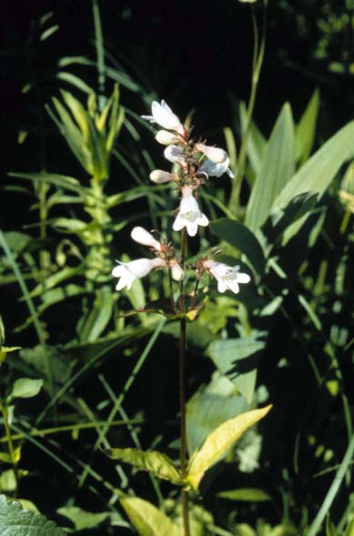
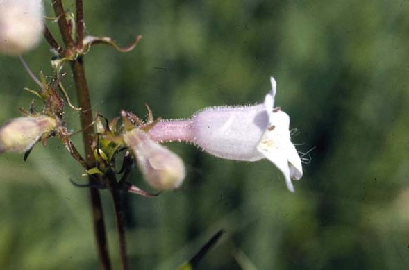
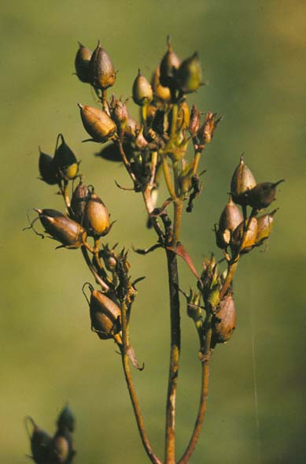

Penstemon Calycosus
Family: Scrophulariaceae
Smooth Beard Tongue
Swink/Wilhelm #7


Click to view larger photo
FLOWERING: Mid-June through July
SEED TIMING: Mid-September to Mid-October
HABITAT: Open savanna and prairies
DIAGNOSTIC FEATURES: 2 - 4 feet high. Thick, smooth opposite leaves. White or faintly pink tinged tube-shaped horizontal blossoms, like musical horns facing out from the stem.
TO PICK: Many, shiny, oval, brown, large seed capsules on each stalk, each containing many small seeds. Pick when brown. Capsules emit an odor similar to dirty socks.